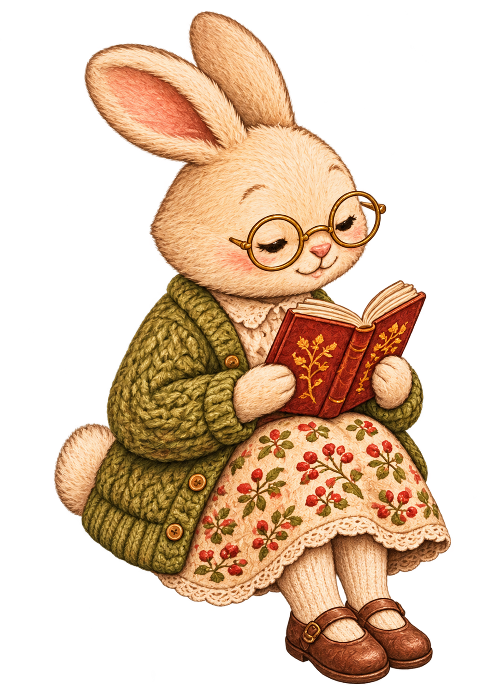
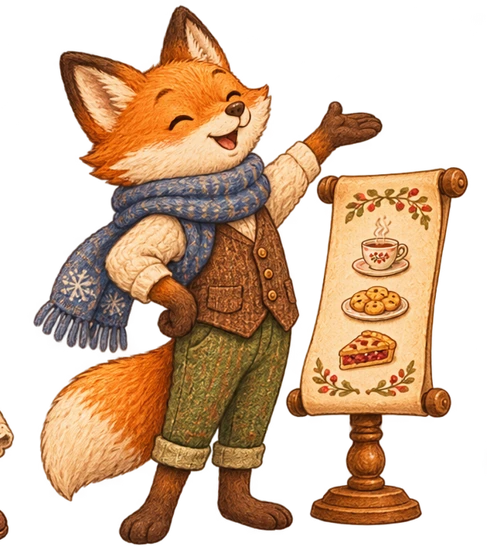
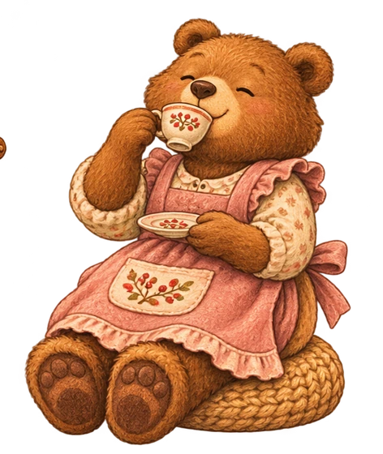
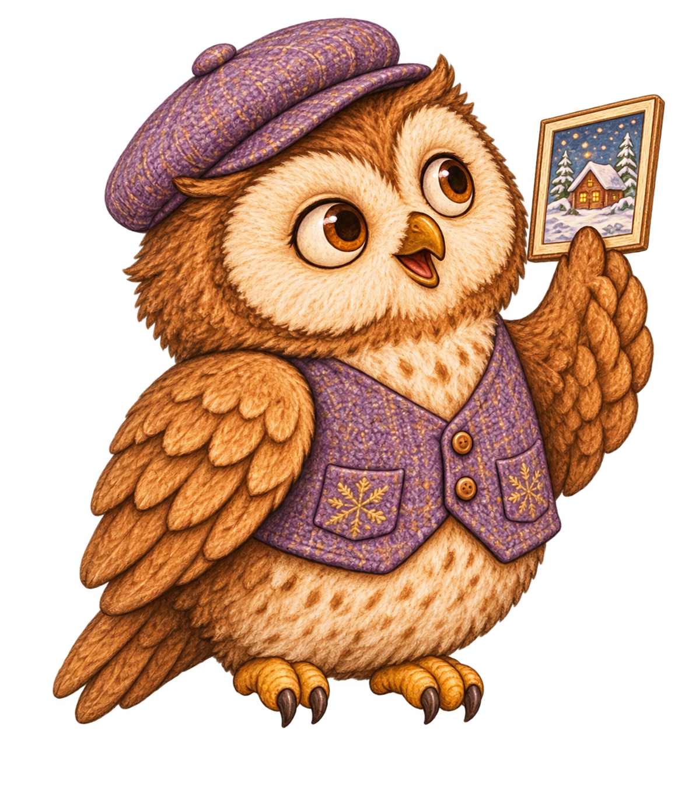
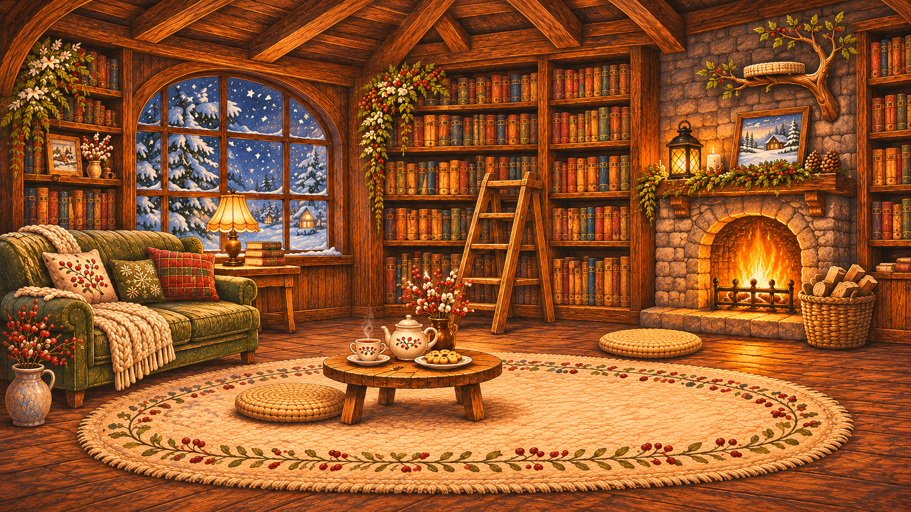

纸书智伴
今天，和谁一起读故事？
大人准备绘本
纸书智伴
冬日故事小屋

一起读故事

我的书架

选个声音

故事小挑战
正在连接后端
减少动态
读故事
我的书架
选个声音
小挑战
雪落在窗外，故事留在灯下。
回小屋
阅读设置

壁炉
壁炉 · 冬夜里的温暖火光
看看这页的文字
听听故事里的另一种说法
阅读说明
上一页
听一听
看故事
找朋友
下一页
问一问
文字问答
找一找
故事视频
聊过什么
放入书架
×